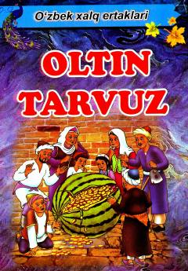

OTO'zbek xalqining eng sara va sevimli ertaklari jamlangan to'plam.
Ushbu kitobda o'zbek xalqining boy og'zaki ijod namunalaridan biri bo'lgan sevimli ertaklar to'plangan. To'plamga "Oltin tarvuz" ertagi va boshqa xalq og'zaki ijodi durdonalari kiritilgan bo'lib, yosh kitobxonlar uchun ma'rifiy va tarbiyaviy ahamiyatga ega. Asar Toshkent shahrida 2019-yilda nashr etilgan.